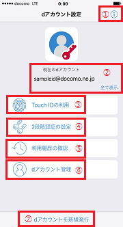
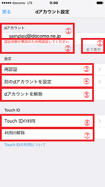

- TOP画面
-

※画像はイメージです
dアカウントの設定、Touch IDの利用設定有無によって表示内容が異なります。- ① ヘルプ
-
本アプリのヘルプやご注意事項、アプリ情報をご確認になれます。
- ② 現在のdアカウント
-
本iOS端末に設定されたdアカウントのIDが表示されます。IDの文字列が画面に収まりきらない場合は末尾が「…」となり、「全て表示」をタップすることで全文字列をご確認になれます。
- ③ Touch IDの利用
-
本iOS端末に設定されたdアカウントと予めiOS端末に登録したTouch IDの情報を関連付けることができます。
本設定を行うことで、対応Webサービスやサービスアプリにおいて、Touch IDを使ったdアカウントログインをご利用になれます。
- ④ 2段階認証の設定
-
dアカウントのセキュリティを強化するための2段階認証の設定を変更できます。
- ⑤ 利用履歴の確認
-
dアカウントのIDのご利用履歴を確認できます。
- ⑥ dアカウント管理
-
本iOS端末に設定したdアカウントを別のdアカウントに変更したり、端末から解除することができます。
また、端末に設定したdアカウントの認証状態が無効となった際に、更新の操作を行う場合も本項目を選択します。
- ⑦ dアカウントの新規発行
-
dアカウントをお持ちでない場合は、こちらから発行することができます。
- dアカウント管理
-

※画像はイメージです
dアカウントの設定、Touch IDの利用設定有無によって表示内容が異なります。- ① dアカウント
-
本iOS端末に設定されたdアカウントのIDが表示されます。IDの文字列が画面に収まりきらない場合は末尾が「…」となり、「全て表示」をタップすることで全文字列をご確認になれます。
- ② dアカウントのステータス
-
設定中のdアカウントに関する情報が表示されます。
-
認証状態が無効のため再認証してください
⇒本機能を利用した認証ができない場合に表示されます。
再認証を実施いただくことで、本機能を利用した認証ができるようになります。 - ③ 再認証
-
本機能を利用した認証を行えるようにすることができます。
※dアカウントの変更や再発行などにより、dアカウントの文字列を変更された場合は、「別のdアカウントを設定」から、新しいdアカウントを設定してください。
- ④ 別のdアカウントを設定
-
設定中のdアカウントを別のdアカウントに変更することができます。
※本機能に設定するdアカウントを変更すると、全てのアプリの認証ユーザが変更になりますのでご注意ください。
- ⑤ dアカウントを解除
-
設定中のdアカウントを解除することができます。
- ⑥ Touch IDの利用
-
本iOS端末に設定されたdアカウントと予めiOS端末に登録したTouch IDの情報を関連付けることができます。
本設定を行うことで、対応Webサービスやサービスアプリにおいて、Touch IDを使ったdアカウントログインをご利用になれます。
- ⑦ 利用の解除
-
dアカウントに関連付けたTouch IDの情報を解除できます。